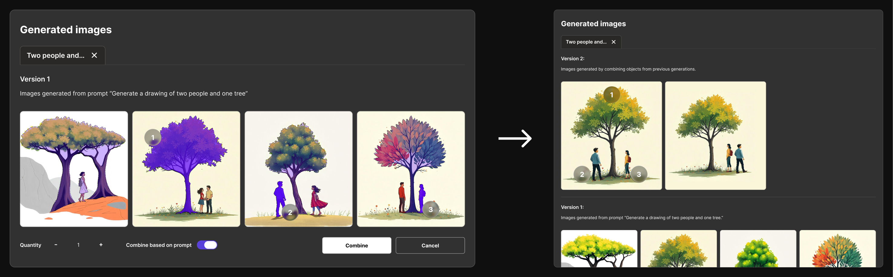

overview
AI image generation lacks the flexibility for iterative design workflows
As AI image generation tools become increasingly popular and accessible, users are facing a growing problem: these tools often produce results that don't match what they want, leading to frustration. Current tools lack flexibility and give users little control over the creative process. This forces users into a tedious cycle of regenerating images until they get something closer to what they actually need.
How might we enable iterative design workflows in AI image generation?
Solution
An AI image generator designed for iterative design and manipulation
VisionFusion combines AI image generation with two novel manipulation approaches, allowing users to generate images and then iterate on them by combining elements, rearranging objects, and refining compositions to achieve their creative vision.
VisionFusion platform demo
Primary features
-
Combine Elements
Users can select their favorite objects from multiple generated images and combine them into a single image.
 -
Rearrange Objects
Users can select an object and move and adjust the size of an image while the AI will use generative fill to adjust the image to the changes.
user research
Exploring the Product Space and Existing Research
Our research began by identifying core user pain points in AI image generation. I identified three main problems to focus on solving.
- Transparency Users can't see how the AI interprets their prompts, making it confusing.
- User control Limited ability to fine-tune and adjust generated images.
- Time spent Lots of time spent regenerating images without getting what you want.
competitive analysis
Analyzing existing AI image generation platforms and their limitations
To understand what's already out there, we analyzed two popular AI image generators:
NightCafe
üëç Lots of editing features
üëé Too many options, unclear interface, confusing prompts
NightCafe interface
DALL-E
üëç Simple interface, inpainting features
üëé Limited control, unclear AI interpretation, lots of trial and error
DALL-E interface
Current selective editing capabilities
Using a brush to select objects to change/keep; works well but could be tedious
Using a prompt to tell AI what to edit (didn't work very well)
ideation
Imagining a workflow for better selective editing
We explored three distinct concepts to address the problem:
-
Prompt Factors
Users can see how their prompt is understood by the AI through key "factors" (e.g., color, style, objects) and have the ability to adjust them.
-
User History
AI system remembers a history of the users preferences and allows them to copy these preferences to new prompts.

-
Object Detection
After generating an image, AI will automatically detect objects in the picture. Users can:
- Lock elements to keep and regenerate the rest
- Combine elements across different images in regeneration
- Select single element to regenerate/remove
Through evaluating these concepts against existing solutions, we validated our ideas and identified the most promising directions. This analysis helped us refine our approach to tackle user pain points that current tools weren't addressing. Using the Human-AI Interaction Guidelines from CHI 2019, we strategically assessed our concepts' strengths and weaknesses on a 5-point scale.
Analysis of concepts using Human-AI Interaction guidelines
wireframing
Wireframing for user history and object detection features.
Feature 1.1 Object Detection
Combining objects for regeneration. After activating the "Select objects" tool, users can choose and combine elements from various AI-generated images. These selected objects are then used to create a new, customized version with a single click.
Object Detection: Combining objects for regeneration
Feature 1.2 Object Detection
Rearranging objects on a canvas
Object Detection: Rearranging objects on a canvas
Feature 2 User preference profiles
The computer's AI generates a user history profile after each completed project to adjust settings based on patterns in the users' preferences.
User preference profiles and history tracking
feedback
Mid-project presentation and feedback
To validate our design direction and gather early insights before moving onto high-fidelity prototypes, we presented our initial concepts to a class of approximately 30 students, along with our professor and teaching assistant. This mid-project presentation was crucial for understanding whether we were on the right track and identifying potential areas for improvement.
Key Insights
- Research existing solutions: We need to thoroughly investigate CHI and other conference papers to ensure our concept is truly novel and avoid reinventing features that already exist in current AI tools.
- Feature prioritization: User preference profiles (Feature 2) might already be implemented in existing AI tools, so we should focus our efforts on more unique features that provide genuine value.
Final Design
VisionFusion: An AI image generator designed for iteration
VisionFusion combines AI image generation with powerful manipulation tools, enabling users to generate images and then iterate on them by combining elements, rearranging objects, and refining compositions.
-
Combine Elements
Users can select their favorite objects from multiple generated images and combine them into a single image.
-
Rearrange Objects
Users can select an object and move and adjust the size of an image while the AI will use generative fill to adjust the image to the changes.
Full demo of VisionFusion features
Impact & Results
Measuring the success of VisionFusion
VisionFusion successfully addressed the key pain points identified in our research, providing users with powerful tools for iterative AI image generation and manipulation.
- Novel Innovation It's a novel idea that can improve the way AI generated images work in an iterative workflow.
- Efficiency Gains Users were able to achieve their desired results significantly faster by eliminating the need for multiple re-prompting cycles.
- Performance Score: 4.7/5 Graded based on Design Guidelines for Human-AI Interaction Design in comparison to existing products.
- Audience Approval Presentation audience found our idea effective in addressing the current issue with AI image generation.
Next Steps
Future development and improvements
While VisionFusion successfully addresses current AI image generation challenges, there are several areas for future development and enhancement:
- Complete Image Generator: Expand beyond the proof of concept prototype to develop a full-featured image generator with additional capabilities like style transfer, background removal, and advanced editing tools.
- User Testing & Iteration: Conduct extensive user testing with creative professionals to refine the interface and add other new interactions for iterative image generation.
Takeaways
What I learned from this project
This project taught me valuable lessons about designing for AI-powered creative tools and the importance of balancing automation with user control. Here are some key takeaways:
- AI as a creative partner: The most successful AI tools enhance human creativity rather than replacing it, providing users with control and agency over the creative process.
- Iteration is key: Designers need tools that support iterative workflows, allowing them to refine and explore different creative directions without starting from scratch.
- Visual feedback matters: When working with AI-generated content, clear visual feedback and real-time previews are essential for building user confidence and understanding.